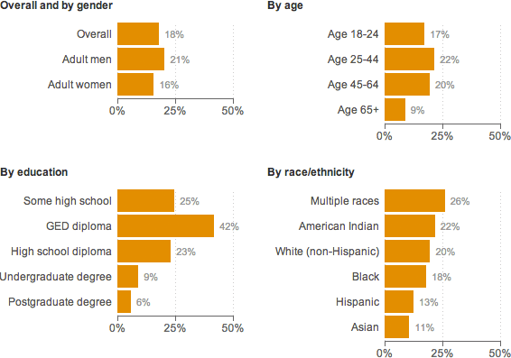

The share of the U.S. population that smokes has declined, from 20.9 percent in 2005 to 18.1 percent in 2012.

Notes
Data reflect current smokers as of 2012. The CDC defines current smokers as “persons who reported smoking at least 100 cigarettes during their lifetime and who, at the time of interview, reported smoking every day or some days.”